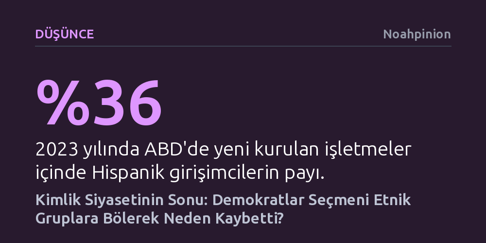

DUSUNCE · Noahpinion · 2026-10-12
Demokratların seçmenleri etnik çıkar gruplarına bölen kimlik siyaseti, sınıf atlama peşindeki Hispanik seçmeni yabancılaştırarak Trump'a yöneltti. Seçim başarısı etnik ayrıcalıklardan değil, bireysel fırsat eşitliğini ve enflasyon gibi ortak ekonomik kaygıları merkeze alan kapsayıcı bir anlatıdan geçiyor.
Azınlık seçmenin sol partilere çantada keklik olduğu varsayımını yıkarak, aşırı siyasallaşmış kimlik etiketlerinin seçmeni nasıl karşı kampa ittiğini somut verilerle gösteriyor.

2024 ABD başkanlık seçimleri, siyasi dengelerin kökten değiştiğini gösteren tarihi bir kırılmaya sahne oldu. Donald Trump tüm kritik salıncak eyaletleri kazanmakla kalmadı, 2004'ten bu yana bir Cumhuriyetçi adayın ilk kez halk oyunun net çoğunluğunu elde etmesini sağladı. Ülke genelindeki harita neredeyse tamamen kırmızıya boyanırken, Demokrat Parti'nin kaleleri sayılan Teksas sınırındaki bölgelerde dahi fark kapandı ya da Cumhuriyetçiler lehine döndü.
Bu sonucun en çarpıcı unsurlarından biri, Hispanik erkek seçmenlerin çoğunluğunun Trump'ı desteklemesi oldu. Yıllar önce Ronald Reagan'ın dile getirdiği Hispaniklerin zamanla Cumhuriyetçilere yöneleceği tezi bu seçimle somutlaştı. Düşük gelirli çalışanlar ile Hispanik seçmenin birleşimi, sağ siyasete beklenmedik ve geniş tabanlı bir koalisyon kazandırdı.
Ortaya çıkan bu tablo, sol çevrelerin yıllardır sarıldığı demografik determinizmi çökertti. 'Demografi kaderdir' diyerek azınlık nüfusunun artışıyla otomatik bir seçim zaferi bekleyen stratejinin gerçeği yansıtmadığı, seçmenin aidiyetinin etnik kökenle garanti altına alınamayacağı tescillendi.
Demokrat Parti elitleri uzun süredir seçmenleri homojen 'topluluklar' olarak kodluyor ve onları ortak mağduriyet anlatıları üzerinden konsolide etmeye çalışıyor. Siyaset biliminde 'bağlantılı kader' olarak adlandırılan bu kuram, etnik kökeni aynı olan bireylerin çıkarlarını ve tercihlerini de bir gördüğünü varsayıyor. Oysa günümüz Amerika'sında insanlar kendilerini gettolara hapsolmuş yalıtılmış gruplar olarak değil, her şeyden önce Amerikalı bireyler olarak tanımlıyor.
Bu yaklaşımın en somut ve geri tepen örneği, ilerici çevrelerin cinsiyetsizleştirme iddiasıyla dayattığı 'Latinx' ifadesi oldu. Yapılan araştırmalar, Hispanik seçmenin bu tür yapay etiketleri benimseyen siyasetçilerden uzaklaştığını ve hatta doğrudan karşı kampa yöneldiğini ortaya koyuyor. İnsanlar rızaları dışında kendilerine dışarıdan bir ırksal kategori biçilmesini, toplumun genelinden ayrıştırılıp küçük bir azınlık kompartımanına tıkılma girişimi olarak görüyor.
Benzer şekilde belirli etnik gruplara odaklanan okul fonları veya özel kredi kotaları gibi Tammany Hall tarzı çıkar dağıtma girişimleri de seçmende karşılık bulmuyor. Yurttaşların kahir ekseriyeti, kendilerine lütfedilen grup ayrıcalıklarından ziyade birey olarak muamele görmeyi ve genel fırsat eşitliğini talep ediyor.
Hispanik Amerikalıların ortak paydası kölelik veya kurumsal ayrımcılık mirası değil, göçmenlerin sınıf atlama ve refah arayışıdır. Veriler, Hispanik ailelerin kuşaklar ilerledikçe gelir seviyelerini beyaz Amerikalılarla aradaki farkı kapatacak ölçüde artırdığını gösteriyor. Yalnızca 2023 yılında ülkede yeni kurulan işletmelerin üçte birinden fazlasını Hispanik girişimciler hayata geçirdi.
İlerici çevrelerin benimsediği sürekli dışlanmışlık ve kurumsal mağduriyet dili, bu dinamik başarı hikayesiyle doğrudan çelişiyor. Çok çalışarak iş kuran, dil öğrenen ve topluma entegre olan kitleler için liyakat temel hedeftir. Sürekli olarak bir 'marjinal grup' muamelesi görmek, yükselme azmindeki göçmenlerin hayallerine hitap etmiyor; tam aksine onları aşağılanmış hissettiriyor.
Bu noktada pozitif ayrımcılık ve etnik kotalar, kendi emeğiyle yükselen bir kesim için ödül değil, kalıcı bir ikinci sınıf vatandaşlık yaftası haline geliyor. Yazarın vurguladığı gibi, "Marjinalleştirilmiş bir grup olarak tanımlanmak kimsenin Amerikan Rüyası'nın bir parçası değildir."
Demokratların seçim yenilgisinde kimlik krizine eşlik eden bir diğer hayati unsur ise enflasyon oldu. 2021 yılında devreye sokulan devasa teşvik paketlerinin tetiklediği fiyat artışları, hayat pahalılığına karşı son derece hassas olan dar gelirli kesimlerin hükümete olan güvenini yıktı. İnsanlar işsizlikten çok kontrolsüz enflasyondan nefret ediyor ve tırmanan fiyatlar sandıkta doğrudan iktidarları cezalandırıyor.
Demokrat Parti'nin gelecekte yeniden toparlanabilmesi, seçmeni etnik ve kültürel mikro-kategorilere bölen dili terk etmesine bağlı. Çözüm, sınıf tabanlı dar çekişmelerde değil; geçmişte New Deal ya da Clinton dönemlerinde olduğu gibi, herkesi kapsayan ortak bir Amerikan yurttaşlığı ve somut ekonomik refah vizyonu inşa etmekte yatıyor.